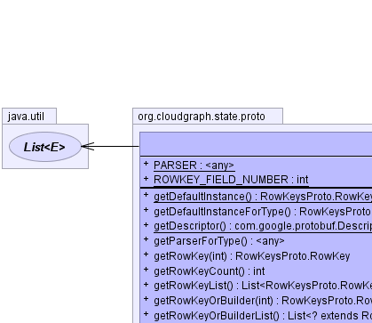
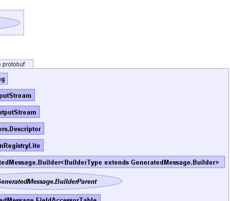
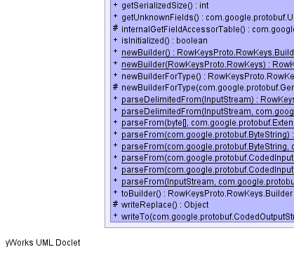
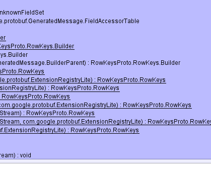
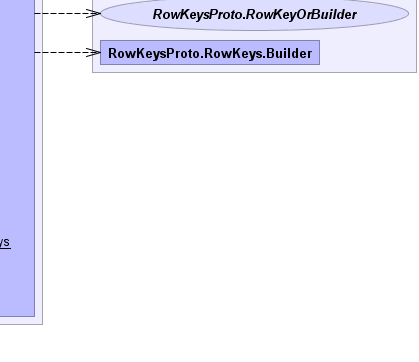

- java.lang.Object
-
- com.google.protobuf.AbstractMessageLite
-
- com.google.protobuf.AbstractMessage
-
- com.google.protobuf.GeneratedMessage
-
- org.cloudgraph.state.proto.RowKeysProto.RowKeys
-
- All Implemented Interfaces:
- com.google.protobuf.Message, com.google.protobuf.MessageLite, com.google.protobuf.MessageLiteOrBuilder, com.google.protobuf.MessageOrBuilder, java.io.Serializable, RowKeysProto.RowKeysOrBuilder
- Enclosing class:
- RowKeysProto
public static final class RowKeysProto.RowKeys extends com.google.protobuf.GeneratedMessage implements RowKeysProto.RowKeysOrBuilder
Protobuf typeorg.cloudgraph.state.proto.RowKeys- See Also:
- Serialized Form
-
 
   
-
-
Nested Class Summary
Nested Classes Modifier and Type Class and Description static classRowKeysProto.RowKeys.BuilderProtobuf typeorg.cloudgraph.state.proto.RowKeys-
Nested classes/interfaces inherited from class com.google.protobuf.GeneratedMessage
com.google.protobuf.GeneratedMessage.BuilderParent, com.google.protobuf.GeneratedMessage.ExtendableBuilder<MessageType extends com.google.protobuf.GeneratedMessage.ExtendableMessage,BuilderType extends com.google.protobuf.GeneratedMessage.ExtendableBuilder>, com.google.protobuf.GeneratedMessage.ExtendableMessage<MessageType extends com.google.protobuf.GeneratedMessage.ExtendableMessage>, com.google.protobuf.GeneratedMessage.ExtendableMessageOrBuilder<MessageType extends com.google.protobuf.GeneratedMessage.ExtendableMessage>, com.google.protobuf.GeneratedMessage.FieldAccessorTable, com.google.protobuf.GeneratedMessage.GeneratedExtension<ContainingType extends com.google.protobuf.Message,Type>
-
-
Field Summary
Fields Modifier and Type Field and Description static com.google.protobuf.Parser<RowKeysProto.RowKeys>PARSERstatic intROWKEY_FIELD_NUMBER
-
Method Summary
Methods Modifier and Type Method and Description static RowKeysProto.RowKeysgetDefaultInstance()RowKeysProto.RowKeysgetDefaultInstanceForType()static com.google.protobuf.Descriptors.DescriptorgetDescriptor()com.google.protobuf.Parser<RowKeysProto.RowKeys>getParserForType()RowKeysProto.RowKeygetRowKey(int index)repeated .org.cloudgraph.state.proto.RowKey rowKey = 1;intgetRowKeyCount()repeated .org.cloudgraph.state.proto.RowKey rowKey = 1;java.util.List<RowKeysProto.RowKey>getRowKeyList()repeated .org.cloudgraph.state.proto.RowKey rowKey = 1;RowKeysProto.RowKeyOrBuildergetRowKeyOrBuilder(int index)repeated .org.cloudgraph.state.proto.RowKey rowKey = 1;java.util.List<? extends RowKeysProto.RowKeyOrBuilder>getRowKeyOrBuilderList()repeated .org.cloudgraph.state.proto.RowKey rowKey = 1;intgetSerializedSize()com.google.protobuf.UnknownFieldSetgetUnknownFields()protected com.google.protobuf.GeneratedMessage.FieldAccessorTableinternalGetFieldAccessorTable()booleanisInitialized()static RowKeysProto.RowKeys.BuildernewBuilder()static RowKeysProto.RowKeys.BuildernewBuilder(RowKeysProto.RowKeys prototype)RowKeysProto.RowKeys.BuildernewBuilderForType()protected RowKeysProto.RowKeys.BuildernewBuilderForType(com.google.protobuf.GeneratedMessage.BuilderParent parent)static RowKeysProto.RowKeysparseDelimitedFrom(java.io.InputStream input)static RowKeysProto.RowKeysparseDelimitedFrom(java.io.InputStream input, com.google.protobuf.ExtensionRegistryLite extensionRegistry)static RowKeysProto.RowKeysparseFrom(byte[] data)static RowKeysProto.RowKeysparseFrom(byte[] data, com.google.protobuf.ExtensionRegistryLite extensionRegistry)static RowKeysProto.RowKeysparseFrom(com.google.protobuf.ByteString data)static RowKeysProto.RowKeysparseFrom(com.google.protobuf.ByteString data, com.google.protobuf.ExtensionRegistryLite extensionRegistry)static RowKeysProto.RowKeysparseFrom(com.google.protobuf.CodedInputStream input)static RowKeysProto.RowKeysparseFrom(com.google.protobuf.CodedInputStream input, com.google.protobuf.ExtensionRegistryLite extensionRegistry)static RowKeysProto.RowKeysparseFrom(java.io.InputStream input)static RowKeysProto.RowKeysparseFrom(java.io.InputStream input, com.google.protobuf.ExtensionRegistryLite extensionRegistry)RowKeysProto.RowKeys.BuildertoBuilder()protected java.lang.ObjectwriteReplace()voidwriteTo(com.google.protobuf.CodedOutputStream output)-
Methods inherited from class com.google.protobuf.GeneratedMessage
getAllFields, getDescriptorForType, getField, getRepeatedField, getRepeatedFieldCount, hasField, makeExtensionsImmutable, newFileScopedGeneratedExtension, newMessageScopedGeneratedExtension, parseUnknownField
-
Methods inherited from class com.google.protobuf.AbstractMessage
equals, findInitializationErrors, getInitializationErrorString, hashBoolean, hashCode, hashEnum, hashEnumList, hashFields, hashLong, toString
-
Methods inherited from class com.google.protobuf.AbstractMessageLite
toByteArray, toByteString, writeDelimitedTo, writeTo
-
Methods inherited from class java.lang.Object
clone, finalize, getClass, notify, notifyAll, wait, wait, wait
-
-
-
-
Field Detail
-
PARSER
public static com.google.protobuf.Parser<RowKeysProto.RowKeys> PARSER
-
ROWKEY_FIELD_NUMBER
public static final int ROWKEY_FIELD_NUMBER
- See Also:
- Constant Field Values
-
-
Method Detail
-
getDefaultInstance
public static RowKeysProto.RowKeys getDefaultInstance()
-
getDefaultInstanceForType
public RowKeysProto.RowKeys getDefaultInstanceForType()
- Specified by:
getDefaultInstanceForTypein interfacecom.google.protobuf.MessageLiteOrBuilder- Specified by:
getDefaultInstanceForTypein interfacecom.google.protobuf.MessageOrBuilder
-
getUnknownFields
public final com.google.protobuf.UnknownFieldSet getUnknownFields()
- Specified by:
getUnknownFieldsin interfacecom.google.protobuf.MessageOrBuilder- Overrides:
getUnknownFieldsin classcom.google.protobuf.GeneratedMessage
-
getDescriptor
public static final com.google.protobuf.Descriptors.Descriptor getDescriptor()
-
internalGetFieldAccessorTable
protected com.google.protobuf.GeneratedMessage.FieldAccessorTable internalGetFieldAccessorTable()
- Specified by:
internalGetFieldAccessorTablein classcom.google.protobuf.GeneratedMessage
-
getParserForType
public com.google.protobuf.Parser<RowKeysProto.RowKeys> getParserForType()
- Specified by:
getParserForTypein interfacecom.google.protobuf.Message- Specified by:
getParserForTypein interfacecom.google.protobuf.MessageLite- Overrides:
getParserForTypein classcom.google.protobuf.GeneratedMessage
-
getRowKeyList
public java.util.List<RowKeysProto.RowKey> getRowKeyList()
repeated .org.cloudgraph.state.proto.RowKey rowKey = 1;- Specified by:
getRowKeyListin interfaceRowKeysProto.RowKeysOrBuilder
-
getRowKeyOrBuilderList
public java.util.List<? extends RowKeysProto.RowKeyOrBuilder> getRowKeyOrBuilderList()
repeated .org.cloudgraph.state.proto.RowKey rowKey = 1;- Specified by:
getRowKeyOrBuilderListin interfaceRowKeysProto.RowKeysOrBuilder
-
getRowKeyCount
public int getRowKeyCount()
repeated .org.cloudgraph.state.proto.RowKey rowKey = 1;- Specified by:
getRowKeyCountin interfaceRowKeysProto.RowKeysOrBuilder
-
getRowKey
public RowKeysProto.RowKey getRowKey(int index)
repeated .org.cloudgraph.state.proto.RowKey rowKey = 1;- Specified by:
getRowKeyin interfaceRowKeysProto.RowKeysOrBuilder
-
getRowKeyOrBuilder
public RowKeysProto.RowKeyOrBuilder getRowKeyOrBuilder(int index)
repeated .org.cloudgraph.state.proto.RowKey rowKey = 1;- Specified by:
getRowKeyOrBuilderin interfaceRowKeysProto.RowKeysOrBuilder
-
isInitialized
public final boolean isInitialized()
- Specified by:
isInitializedin interfacecom.google.protobuf.MessageLiteOrBuilder- Overrides:
isInitializedin classcom.google.protobuf.GeneratedMessage
-
writeTo
public void writeTo(com.google.protobuf.CodedOutputStream output) throws java.io.IOException- Specified by:
writeToin interfacecom.google.protobuf.MessageLite- Overrides:
writeToin classcom.google.protobuf.AbstractMessage- Throws:
java.io.IOException
-
getSerializedSize
public int getSerializedSize()
- Specified by:
getSerializedSizein interfacecom.google.protobuf.MessageLite- Overrides:
getSerializedSizein classcom.google.protobuf.AbstractMessage
-
writeReplace
protected java.lang.Object writeReplace() throws java.io.ObjectStreamException- Overrides:
writeReplacein classcom.google.protobuf.GeneratedMessage- Throws:
java.io.ObjectStreamException
-
parseFrom
public static RowKeysProto.RowKeys parseFrom(com.google.protobuf.ByteString data) throws com.google.protobuf.InvalidProtocolBufferException
- Throws:
com.google.protobuf.InvalidProtocolBufferException
-
parseFrom
public static RowKeysProto.RowKeys parseFrom(com.google.protobuf.ByteString data, com.google.protobuf.ExtensionRegistryLite extensionRegistry) throws com.google.protobuf.InvalidProtocolBufferException
- Throws:
com.google.protobuf.InvalidProtocolBufferException
-
parseFrom
public static RowKeysProto.RowKeys parseFrom(byte[] data) throws com.google.protobuf.InvalidProtocolBufferException
- Throws:
com.google.protobuf.InvalidProtocolBufferException
-
parseFrom
public static RowKeysProto.RowKeys parseFrom(byte[] data, com.google.protobuf.ExtensionRegistryLite extensionRegistry) throws com.google.protobuf.InvalidProtocolBufferException
- Throws:
com.google.protobuf.InvalidProtocolBufferException
-
parseFrom
public static RowKeysProto.RowKeys parseFrom(java.io.InputStream input) throws java.io.IOException
- Throws:
java.io.IOException
-
parseFrom
public static RowKeysProto.RowKeys parseFrom(java.io.InputStream input, com.google.protobuf.ExtensionRegistryLite extensionRegistry) throws java.io.IOException
- Throws:
java.io.IOException
-
parseDelimitedFrom
public static RowKeysProto.RowKeys parseDelimitedFrom(java.io.InputStream input) throws java.io.IOException
- Throws:
java.io.IOException
-
parseDelimitedFrom
public static RowKeysProto.RowKeys parseDelimitedFrom(java.io.InputStream input, com.google.protobuf.ExtensionRegistryLite extensionRegistry) throws java.io.IOException
- Throws:
java.io.IOException
-
parseFrom
public static RowKeysProto.RowKeys parseFrom(com.google.protobuf.CodedInputStream input) throws java.io.IOException
- Throws:
java.io.IOException
-
parseFrom
public static RowKeysProto.RowKeys parseFrom(com.google.protobuf.CodedInputStream input, com.google.protobuf.ExtensionRegistryLite extensionRegistry) throws java.io.IOException
- Throws:
java.io.IOException
-
newBuilder
public static RowKeysProto.RowKeys.Builder newBuilder()
-
newBuilderForType
public RowKeysProto.RowKeys.Builder newBuilderForType()
- Specified by:
newBuilderForTypein interfacecom.google.protobuf.Message- Specified by:
newBuilderForTypein interfacecom.google.protobuf.MessageLite
-
newBuilder
public static RowKeysProto.RowKeys.Builder newBuilder(RowKeysProto.RowKeys prototype)
-
toBuilder
public RowKeysProto.RowKeys.Builder toBuilder()
- Specified by:
toBuilderin interfacecom.google.protobuf.Message- Specified by:
toBuilderin interfacecom.google.protobuf.MessageLite
-
newBuilderForType
protected RowKeysProto.RowKeys.Builder newBuilderForType(com.google.protobuf.GeneratedMessage.BuilderParent parent)
- Specified by:
newBuilderForTypein classcom.google.protobuf.GeneratedMessage
-
-